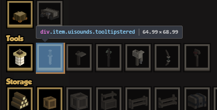
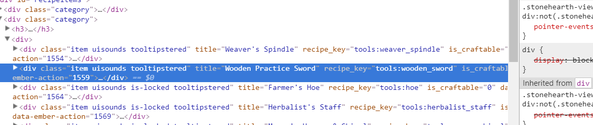
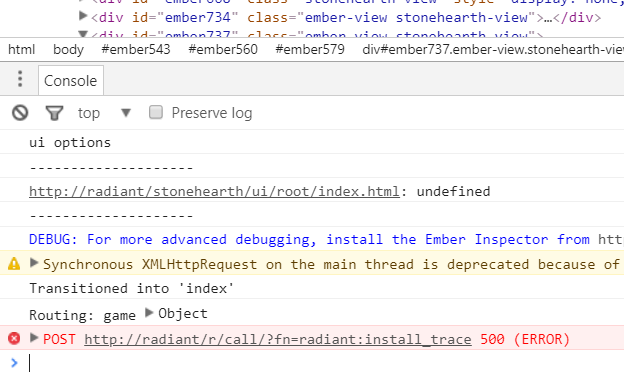
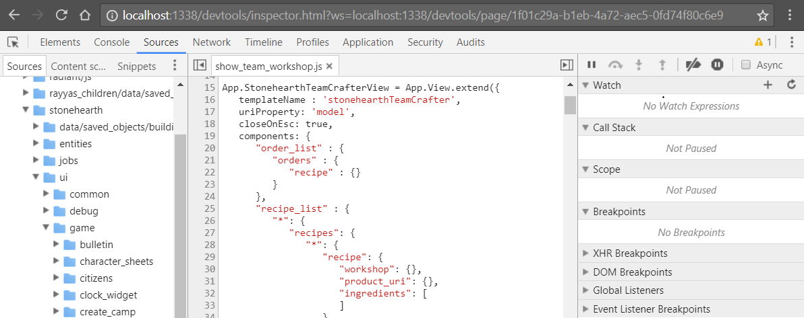
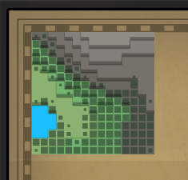

While modding it is pretty common to break things accidentally, so here are a few tips for when you don't know why something's not working as intended:
Take a look at the stonehearth.log file. It is inside the folder where Stonehearth is installed, and it gets overwritten every time you run the game. If there's some file that couldn't be loaded properly, it will be mentioned in the log (sometimes errors will only appear inside the log, instead of popping up in the game). You can also output text to the stonehearth.log from within your mod's Lua files. Instructions.
Make sure that your mod is enabled before starting a game. If you had something wrong in your manifest, it might get marked as invalid or outdated in the Mods menu, and the game won't load your mod.
Verify your JSON files with JsonLint. This will tell you if you had any missing or trailing commas, which is a common typo that will make the game not read your files correctly. You can also compare your JSON files with other files from the game with JSON Diff. This tool will tell you the differences even if the key-value pairs are in different order, it's good for checking if you've missed some key or value.
Search for typos in your aliases, or in your localization strings. They might have some wrong letter and therefore they reference something that doesn't exist, or you forgot to prefix your aliases with the correct namespace in your files. You can also open your mod with SHED and it will tell you if something's pointing to unexisting files. It's also common to forget to prefix the mixintos and overrides with the mod's namespace.
Also, if you copy-paste text from some document (such as a .pdf file, or a .doc file), there might be invisible characters that the game considers invalid, so be careful with that.Test on a new game instead of on a savefile. Some changes won't be applied for old entities, so you'll need to create new ones in order to see them.
In general, when an error pops up inside the game, it will have a trace of the code that failed, so you should be able to figure out the problem by looking at that code. Even if the trace points to files from the stonehearth mod, the errors may be caused by wrong data from your mod.
These errors will also be printed in the stonehearth.log, so if the game closes, you can still check the log until you reopen the game.
If your game crashed while testing your mod and now it won't open, check the Task Manager and see if you have Stonehearth.exe processes running in the background. Right-click on them and select "End Task" if needed.
On extreme cases, it might be due to your user_settings.json (located inside the same folder than the stonehearth.log). You can try removing it and restarting the game (the file will be re-created).
Debugging the UI
For UI errors, which usually appear at the right side of the screen, you must always reload the UI (with F5 or the button in the error dialog). It might be in an inconsistent state and you won't be able to continue using it correctly unless you reload it. If you forgot to take a look at the trace in the error dialog, you can look at the stonehearth.log too (provided you haven't restarted the game).
 Reloading the UI will make any non-UI error reappear, even if you've already closed them. Simply close them again if you've already checked all of them.
Reloading the UI will make any non-UI error reappear, even if you've already closed them. Simply close them again if you've already checked all of them.
If you make mods related to the UI, you can make use of the CEF debugger, provided you have Google Chrome installed:
- With the game running, open Chrome.
- In the address bar, type localhost:1338 and press Enter.

- Click on the "Stonehearth UI" link. Other links might appear if you're not inside the game (for example, if you're loading a game).
- When you need to reload the debugger, make sure that the address is only localhost:1338, as the browser will append parameters to it as you use it.
- Also make sure that you only have one instance of Stonehearth running, otherwise the port might change and not respond to the instance that you want.
Examples of use:
- You can inspect UI elements. Click on the "Inspect element" tool, then go to the game, and hover over any UI elements. You might need to open the UI view you want to inspect before activating this tool.

- Click on the one you want to inspect, and go to the browser. It will be selected in the HTML, and you can check all its properties, temporarily tweak its CSS, etc.  
- You can also check for Javascript warnings and errors in the web console. 
- And you can debug your Javascript code with the CEF debugger. 
Testing your mods faster
In order to test your mods more easily you can use the debugtools that come bundled with the game. Instructions on how to use them here. Some of the commands from the default console can be used by shift+clicking an entity in the game. This is faster than having to type the command in the console.
Tired of starting new games every time you need to test a new change? You can shorten the world generation step by adding this to your user_settings.json file at the same level than the "user_id" node:
"mods" : {
"stonehearth" : {
"world_generation" : {
"method" : "tiny"
}
}
}
You might already have these "mods" : { "stonehearth" : {} } keys in your settings so just paste the "world_generation" node at the corresponding level (but remember to add commas where needed). This will generate a tiny world so it will take less time to load it.


Microworld
You can also create your own test worlds with the help of this mod. Can be found here. This mod, once configured in your user_settings.json, will skip the main menu and load directly your test world, which is much faster.
Loading savefiles
If you want to fix save compatibility for your own mods, there's a faster way to load a specific savefile for testing. You can add these keys to your user_settings.json at the same level than your user_id:
"game" : {
"load_game" : "test_save"
}
Remember to add commas where needed so that the JSON is still valid. The value for "load_game" should be the name of the folder of the savefile you want to load.
Don't forget to remove this key or prefix it with an underscore ("_load_game") to invalidate it, whenever you want to run the normal game again.